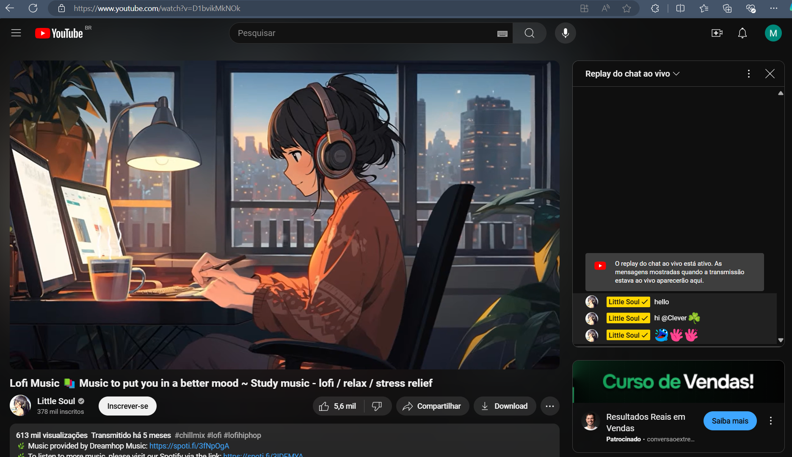

O youtube, com a funcionalidade de de poder comentar um vídeo ao vivo. Os comentários são recarregados dinamicamente sem a necessidade de recarregar a página inteira.

Exercício 2 javascript
Gostei de poder utilizar o ctrl + f aqui no VS code. É um atalho com o qual já estou habituado, e usso torna a usabilidade melhor
Também gosto do prettier. Seria sofrível ter que escrever tudo sem as cores para diferenciar os elementos